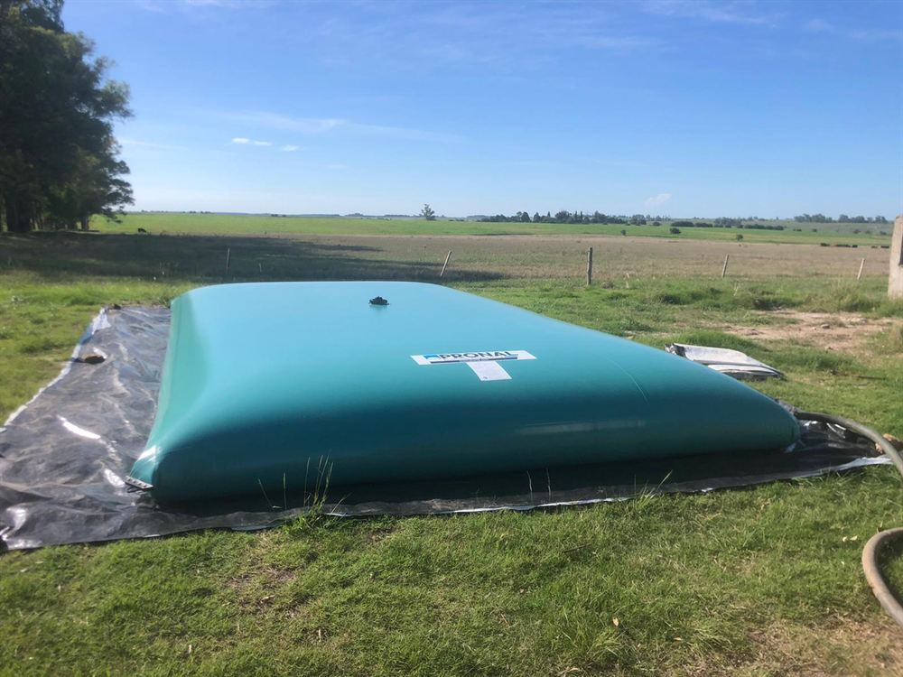

Depozitare profesională
Rezervoare flexibile pentru îngrășăminte lichide
Oferim rezervoare flexibile pentru depozitarea îngrășămintelor minerale lichide, destinate producătorilor agricoli, centrelor de distribuție și instalațiilor industriale. Sunt realizate din țesătură tehnică acoperită cu PVC (1300 g/m²) și asamblate prin sudură de înaltă frecvență, ceea ce le asigură o durată lungă de viață și rezistență chimică la contactul cu îngrășămintele lichide.
Construcția complet închisă protejează conținutul de influențele atmosferice și de diluarea nedorită, iar structura flexibilă permite o instalare rapidă și simplă pe o suprafață plană, fără construcții din beton sau oțel.
O capacitate de 100 m³ este suficientă pentru aproximativ 350 ha.
| Material | țesătură de înaltă rezistență, 1300 g/m² |
|---|---|
| Acoperire | PVC pe ambele fețe |
| Dimensiuni | standard sau la comandă, conform cerințelor clientului |
| Asamblare | sudură de înaltă frecvență cu protecție suplimentară a marginilor |
| Rezistență la temperatură | de la −30 °C la +70 °C |
Echipamente și accesorii
- gură sudată DN 140 cu supapă de evacuare a gazelor
- cot de preaplin DN 80 cu racord simetric și dop
- vană ghilotină cu semi-rotire DN 50 cu racord simetric și dop
- 4 colțuri ranforsate
- trusă de reparații
- protecția supapei termice